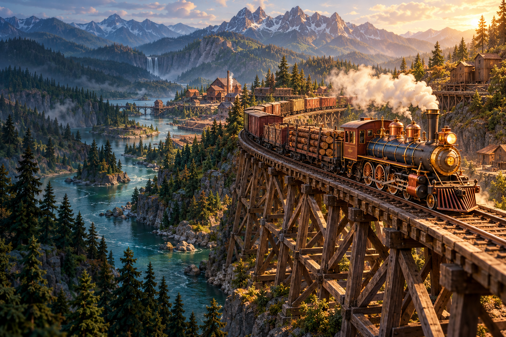

THE VALLEY CHARTER
Cedar Valley
A railway begins with a connection.
CEDAR VALLEY
N
A railway begins with a connection.

Build a railway.
Bring a valley to life.
Link the towns. Supply the industries. Make the railway pay its way before the new century.